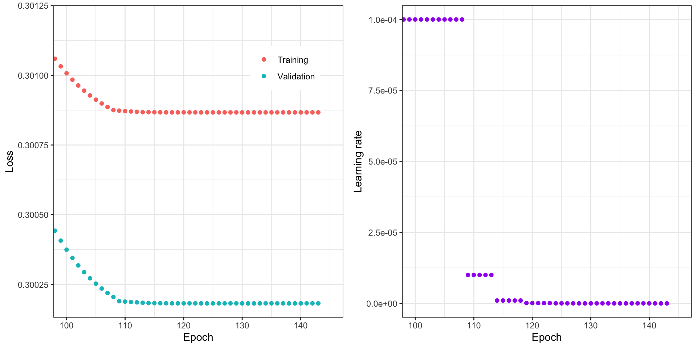
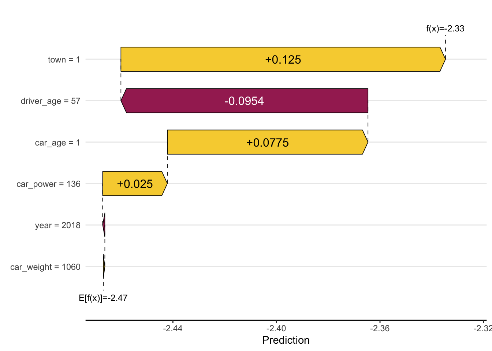
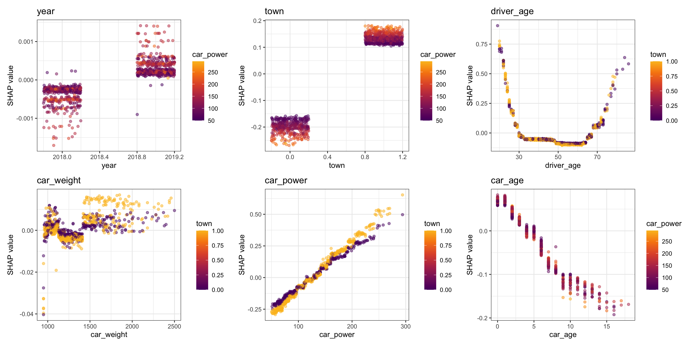
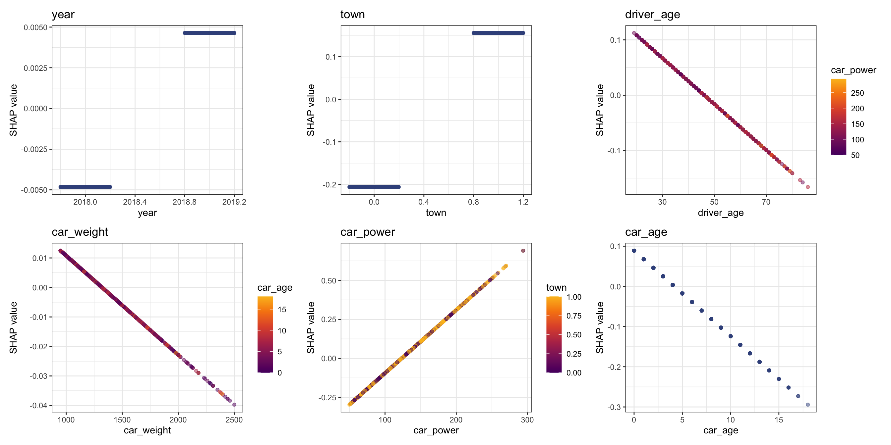
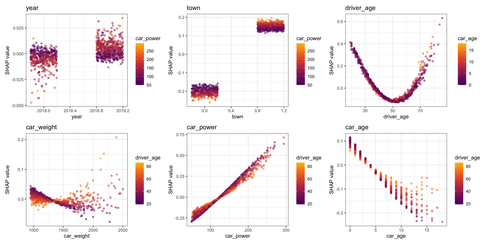

renv::status()No issues found -- the project is in a consistent state.# renv::restore()
# renv::snapshot()
# renv::clean()
# renv::install( c("arrow", "ggplot2", "caret", "keras3", "gridExtra", "lightgbm", "shapviz", "kernelshap") )This follows the tutorial from “SHAP for Actuaries: Explain any Model”.
Use renv to manage packages.
renv::status()No issues found -- the project is in a consistent state.# renv::restore()
# renv::snapshot()
# renv::clean()
# renv::install( c("arrow", "ggplot2", "caret", "keras3", "gridExtra", "lightgbm", "shapviz", "kernelshap") )Only load absolutely essential packages.
library(magrittr)
library(ggplot2)Loading data-set.
df <- arrow::read_parquet("data/df.parquet")summary(df) year town driver_age car_weight car_power
Min. :2018 Min. :0.0000 Min. :18 Min. : 950 Min. : 50
1st Qu.:2018 1st Qu.:0.0000 1st Qu.:35 1st Qu.:1090 1st Qu.: 86
Median :2019 Median :1.0000 Median :45 Median :1240 Median :116
Mean :2019 Mean :0.6001 Mean :46 Mean :1308 Mean :125
3rd Qu.:2019 3rd Qu.:1.0000 3rd Qu.:56 3rd Qu.:1460 3rd Qu.:156
Max. :2019 Max. :1.0000 Max. :88 Max. :3120 Max. :341
car_age claim_nb
Min. : 0.000 Min. :0.00000
1st Qu.: 1.000 1st Qu.:0.00000
Median : 3.000 Median :0.00000
Mean : 4.156 Mean :0.08933
3rd Qu.: 6.000 3rd Qu.:0.00000
Max. :23.000 Max. :4.00000 head(df) year town driver_age car_weight car_power car_age claim_nb
1 2018 1 51 1760 173 3 0
2 2019 1 41 1760 248 2 0
3 2018 1 25 1240 111 2 0
4 2019 0 40 1010 83 9 0
5 2018 0 43 2180 169 5 0
6 2018 1 45 1170 149 1 1Split the data into a training set and a validation set.
set.seed(3105)
ix <- base::sample(nrow(df), 0.9 * nrow(df))
# Response
y <- "claim_nb"
# Covariates
x <- c("year", "town", "driver_age", "car_weight", "car_power", "car_age")
train <- df[ix, ]
test <- df[-ix, ]
y_train <- train[[y]]
x_train <- data.matrix(train[x])Fit the GLM.
model_specification <- stats::reformulate(x, y); model_specificationclaim_nb ~ year + town + driver_age + car_weight + car_power +
car_agefit_glm <- model_specification %>% stats::glm(data = train, family = poisson(link = "log")); fit_glm
Call: stats::glm(formula = ., family = poisson(link = "log"), data = train)
Coefficients:
(Intercept) year town driver_age car_weight car_power
-2.195e+01 9.461e-03 3.613e-01 -4.156e-03 -3.368e-05 4.043e-03
car_age
-2.128e-02
Degrees of Freedom: 899999 Total (i.e. Null); 899993 Residual
Null Deviance: 399200
Residual Deviance: 392900 AIC: 548000First install Keras API with Tensorflow as its back-end. The instructions are from posit (click here)
# Installs everything with the following (uncomment and execute)...
# keras3::install_keras(backend = "tensorflow")Fit the neural network. First define the neural network architecture.
# Processor for data
scaler <- caret::preProcess(x_train, method = "range", rangeBounds = c(-1, 1)); scalerCreated from 900000 samples and 6 variables
Pre-processing:
- ignored (0)
- re-scaling to [-1, 1] (6)# Callback functions for neural network
cb <- list(
keras3::callback_early_stopping(patience = 20),
keras3::callback_reduce_lr_on_plateau(patience = 5)
)
# Neural network architecture
make_nn <- function() {
keras3::clear_session()
tensorflow::set_random_seed(4349)
input <- keras::layer_input(length(x))
output <- input %>%
keras3::layer_dense(units = 40, activation = "tanh") %>%
keras3::layer_dense(units = 20, activation = "tanh") %>%
keras3::layer_dense(units = 10, activation = "tanh") %>%
keras3::layer_dense(units = 1, activation = "exponential")
keras3::keras_model(input, output)
}
# Create the model
fit_nn <- make_nn() %>%
keras::compile(
optimizer = keras3::optimizer_adam(learning_rate = 1e-4),
loss = keras3::loss_poisson);Registered S3 methods overwritten by 'keras':
method from
as.data.frame.keras_training_history keras3
plot.keras_training_history keras3
print.keras_training_history keras3
r_to_py.R6ClassGenerator keras3fit_nnModel: "functional"
┏━━━━━━━━━━━━━━━━━━━━━━━━━━━━━━━━━━━┳━━━━━━━━━━━━━━━━━━━━━━━━━━┳━━━━━━━━━━━━━━━┓
┃ Layer (type) ┃ Output Shape ┃ Param # ┃
┡━━━━━━━━━━━━━━━━━━━━━━━━━━━━━━━━━━━╇━━━━━━━━━━━━━━━━━━━━━━━━━━╇━━━━━━━━━━━━━━━┩
│ input_layer (InputLayer) │ (None, 6) │ 0 │
├───────────────────────────────────┼──────────────────────────┼───────────────┤
│ dense (Dense) │ (None, 40) │ 280 │
├───────────────────────────────────┼──────────────────────────┼───────────────┤
│ dense_1 (Dense) │ (None, 20) │ 820 │
├───────────────────────────────────┼──────────────────────────┼───────────────┤
│ dense_2 (Dense) │ (None, 10) │ 210 │
├───────────────────────────────────┼──────────────────────────┼───────────────┤
│ dense_3 (Dense) │ (None, 1) │ 11 │
└───────────────────────────────────┴──────────────────────────┴───────────────┘
Total params: 1,321 (5.16 KB)
Trainable params: 1,321 (5.16 KB)
Non-trainable params: 0 (0.00 B)Fit the model.
system.time(
history <- fit_nn %>%
keras3::fit(
x = stats::predict(scaler, x_train),
y = y_train,
epochs = 200,
batch_size = 1e4,
validation_split = 0.1,
callbacks = cb,
verbose = 0
)
) user system elapsed
57.898 59.952 35.963 Inspect the loss and learning rate. Around epoch 110 is where we should consider stopping.
loss_validation <- history$metrics$loss
loss_train <- history$metrics$val_loss
learning_rate <- history$metrics$learning_rate
epoch <- base::seq_along(loss_train)
ymin <- base::min(loss_train, loss_validation)
p1 <- ggplot() +
geom_point(aes(x = epoch, y = loss_train, col = "Training")) +
geom_point(aes(x = epoch, y = loss_validation, col = "Validation")) +
coord_cartesian(ylim = c(ymin, 0.3012), xlim = c(100, 145)) +
ylab("Loss") + xlab("Epoch") +
theme_bw() + theme(
legend.position = "inside",
legend.position.inside = c(0.8,0.8),
legend.title = element_blank())
p2 <- ggplot() + geom_point(aes(x = epoch, y = learning_rate), col = "purple") +
coord_cartesian(xlim = c(100, 145)) +
ylab("Learning rate") + xlab("Epoch") +
theme_bw()
gridExtra::grid.arrange(grobs = list(p1, p2), ncol = 2)
To fit a boosted trees model, we use LightGBM. The parameters have been tuned outside this script by combining early-stopping with random parameter search cross-validation.
dtrain <- lightgbm::lgb.Dataset(
x_train,
label = y_train,
params = list(feature_pre_filter = FALSE)
)
params <- list(
learning_rate = 0.05,
objective = "poisson",
metric = "poisson",
num_leaves = 7,
min_data_in_leaf = 50,
min_sum_hessian_in_leaf = 0.001,
colsample_bynode = 0.8,
bagging_fraction = 0.8,
lambda_l1 = 3,
lambda_l2 = 5,
num_threads = 7
)
fit_lgb <- lightgbm::lgb.train(params = params, data = dtrain, nrounds = 300)[LightGBM] [Info] Auto-choosing row-wise multi-threading, the overhead of testing was 0.005425 seconds.
You can set `force_row_wise=true` to remove the overhead.
And if memory is not enough, you can set `force_col_wise=true`.
[LightGBM] [Info] Total Bins 539
[LightGBM] [Info] Number of data points in the train set: 900000, number of used features: 6
[LightGBM] [Info] Start training from score -2.416364The data is simulated, so the underlying true is known.
age_effect <- function(age) {
x <- (age - 66) / 60
0.05 + x^8 + 0.4*x^3 + 0.3*x^2 + 0.06*x
}
true_model <- function(df) {
log_lambda <- with(
df,
0 +
0.15 * town +
+ log(age_effect(driver_age)) +
(0.3 + 0.15 * town) * car_power / 100 + # interaction 1
# 0.1 * car_power / (car_weight / 100)^2 + # interaction 2
-0.02 * car_age
)
exp(log_lambda)
}
# Check
true_model(head(df))[1] 0.11324469 0.16716395 0.12691164 0.05253090 0.07364009 0.10871680The first steps in the SHAP analysis is to select a dataset of 1000 rows to be explained. Furthermore, for model-agnostic Kernel SHAP, we additionally sample a smaller dataset, serving as background data for integrating out marginal means.
x_explain <- train[sample(nrow(train), 1000), x]
bg <- train[sample(nrow(train), 200), ]Waterfall plot for a single element of the tree model.
system.time( # is very fast for tree models
shap_lgb <- shapviz::shapviz(
fit_lgb, X_pred = data.matrix(x_explain))
) user system elapsed
0.085 0.002 0.087 shap_lgb'shapviz' object representing 1000 x 6 SHAP matrix. Top lines:
year town driver_age car_weight car_power car_age
546355 0.0001977658 0.1752195 -0.03926834 0.0119638741 0.38879182 -0.02043161
602353 -0.0008385433 0.1253966 -0.09544632 0.0005893207 0.02497695 0.07751412Plot the waterfall plot for the tree model for a single observation.
# SHAP waterfall plot for the second row
shapviz::sv_waterfall(shap_lgb, row_id = 2)
Plot the importance plot for the tree model represented by a bar plot and a bee-swarm plot.
p1 <- shapviz::sv_importance(shap_lgb, show_numbers = TRUE, kind = "bar") + theme_bw()
p2 <- shapviz::sv_importance(shap_lgb, show_numbers = TRUE, kind = "beeswarm") + theme_bw()
gridExtra::grid.arrange(grobs = list(p1, p2), ncol = 2)
Plot the dependence plot for the tree model for each covariate and its (potentially) strongest interaction (see e.g. car-power and town where some clustering/grouping is evident).
shapviz::sv_dependence(shap_lgb, x, alpha = 0.5) & theme_bw()
Here the model-agnostic ‘Kernel SHAP’ method is used. This is much slower than the tree model.
We will focus the on the dependence plots.
system.time(
shap_glm <- shapviz::shapviz(
kernelshap::kernelshap(fit_glm, X = x_explain, bg_X = bg, verbose = FALSE))
) user system elapsed
1.071 0.289 1.360 shapviz::sv_dependence(shap_glm, x, alpha = 0.5) & theme_bw()
# Function that maps data.frame to neural net input and calculates (log) predictions
pred_nn_ln <- function(model, df) {
X <- data.matrix(df[x])
X_scaled <- stats::predict(scaler, X)
log(stats::predict(model, X_scaled, batch_size = 1e4, verbose = 0))
}
system.time(
shap_nn <- shapviz::shapviz(
kernelshap::kernelshap(fit_nn, X = x_explain, bg_X = bg, pred_fun = pred_nn_ln, verbose = FALSE))
) user system elapsed
26.608 5.683 26.236 shapviz::sv_dependence(shap_nn, x, alpha = 0.5) & theme_bw()system.time(
shap_truth <- shapviz::shapviz(
kernelshap::kernelshap(
"truth",
X = x_explain,
bg_X = bg,
pred_fun = function(m, X) log(true_model(X)),
verbose = FALSE
)
)
) user system elapsed
1.098 0.274 1.372 shapviz::sv_dependence(shap_nn, x, alpha = 0.5) & theme_bw()
Based on the SHAP analysis, we notice that 1) year and car_weight have very little effect on the model, 2) there is likely an interactive between town and car_power, and 3) driver_age has a non-linear effect.
fit_glm2 <- stats::glm(
claim_nb ~ town * car_power + splines::ns(driver_age, 5) + car_weight + car_age,
data = train,
family = poisson(link = "log")
)
fit_glm2
Call: stats::glm(formula = claim_nb ~ town * car_power + splines::ns(driver_age,
5) + car_weight + car_age, family = poisson(link = "log"),
data = train)
Coefficients:
(Intercept) town
-1.970e+00 1.749e-01
car_power splines::ns(driver_age, 5)1
3.110e-03 -9.454e-01
splines::ns(driver_age, 5)2 splines::ns(driver_age, 5)3
-1.055e+00 -7.428e-01
splines::ns(driver_age, 5)4 splines::ns(driver_age, 5)5
-1.639e+00 5.349e-01
car_weight car_age
-3.172e-05 -2.137e-02
town:car_power
1.382e-03
Degrees of Freedom: 899999 Total (i.e. Null); 899989 Residual
Null Deviance: 399200
Residual Deviance: 389800 AIC: 545000Comparing out-of-sample loss values. The imporved GLM has the smallest out-of-sample loss value.
# Poisson deviance loss:
# 'y' are the claim values and 'm' is the 'lambda' * 'v' (i.e. the fitted values).
poisson_deviance_loss <- function(y, m) {
if(y == 0){
2 * (m - y - y)
} else {
2 * (m - y - y * log(m / y))
}
}
# Vectorize the function
poisson_deviance_loss <- Vectorize(poisson_deviance_loss)
# Out-of-sample loss values for all models below...
# GLM 2
out_loss_glm2 <- poisson_deviance_loss( test$claim_nb, stats::predict.glm(fit_glm2, newdata = test, type = "response") ) %>% mean()
# GLM (original)
out_loss_glm <- poisson_deviance_loss(
test$claim_nb, stats::predict.glm(fit_glm, newdata = test, type = "response") ) %>% mean()
# Neural network
out_loss_nn <- poisson_deviance_loss(
test$claim_nb, pred_nn_ln(fit_nn, test) %>% exp() %>% as.vector() ) %>% mean()
# Boosted trees model
out_loss_lgb <- poisson_deviance_loss(
test$claim_nb, stats::predict(fit_lgb, newdata = data.matrix(test[x]), type = "response") ) %>% mean()
# The true model
out_loss_true <- poisson_deviance_loss(
test$claim_nb, true_model(test) ) %>% mean()
# Compare loss values
loss <- c( "glm" = out_loss_glm, "nn" = out_loss_nn, "lgb" = out_loss_lgb, "glm2" = out_loss_glm2, "true" = out_loss_true )
data.frame(loss) loss
glm 0.4382854
nn 0.4361091
lgb 0.4351797
glm2 0.4350513
true 0.4349707